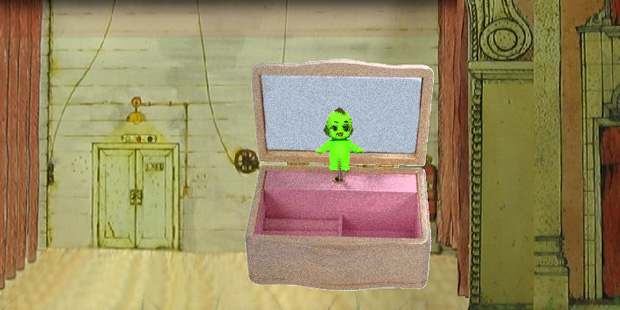

Portfolio
World of Warcraft Chalk Painting
Featured on BoingBoing, Kotaku, and WoW Insider.
- What: World of Warcraft Chalk Painting featuring an Orc and Night Elf
- When: Time to Completion - 13.5 hrs (over two days, Oct. 7th-8th 2006)
- Where: Little Italy in San Diego, CA, USA
- How: Medium - Chalk on asphalt; Dimensions - 8 ft by 8 ft
Minecraft Creeper Pillow
Those who play Minecraft are all too familiar with this sound. Terrifying and yet, misunderstood... Clearly, the Creeper has some explosive issues they need to work through, but maybe they just want hugs. Now you can adopt a 12"x12" Creeper that is less formidable.
The Things We See
- Independently scripted, produced, directed, and edited
- Designed and created the set and characters
- Managed small production crew while budgeted money and time
Rock Band Mushroom Drum Pads
Custom screenprinted Super Mario themed Rock Band drum pads complete with viral video. It was featured on Engadget, Kotaku, G4TV, and many other sites.
The Green Kewpie
Flash animation.
About
I am a multimedia artist with a BA from UC San Diego. I often find myself exploring art by trial and error. I continue to evolve my style by experimenting with new mediums, while my insatiable curiosity about the world and human nature drives me to learn something new everyday.
Contact
Elsewhere
You can reach me on these other social networks and sites.